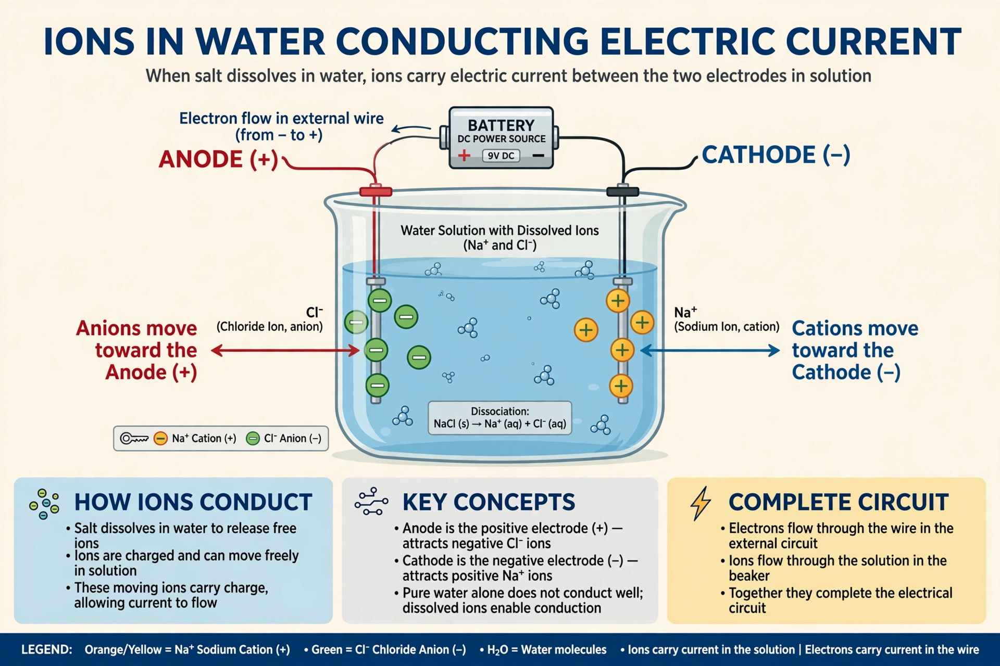

An electrolyte is a substance that produces an electrically conducting solution when dissolved in a polar solvent, such as water. The dissolved substance separates into cations and anions, which disperse uniformly through the solvent. Salts, acids and bases are typical electrolytes; their solutions conduct electricity because the ions are free to move.
Strong electrolytes, such as sodium chloride, dissociate almost completely in solution, while weak electrolytes, such as acetic acid, dissociate only partially. The concept was developed in the nineteenth century by Michael Faraday, who coined the terms electrolyte, electrode and ion, and by Svante Arrhenius, whose theory of electrolytic dissociation explained conductivity.
Electrolytes are essential in electrochemistry and technology: they carry current in batteries and fuel cells, enable electroplating and industrial processes such as aluminium production, and are used in supercapacitors. The voltage obtainable from a cell depends on the electrolyte and electrode materials.
In living organisms, electrolytes — principally sodium, potassium, calcium, magnesium, chloride, bicarbonate and phosphate — regulate hydration, nerve and muscle function, and blood pH. Disturbances of electrolyte balance, from dehydration, illness or medication, can be dangerous and are treated with oral rehydration or intravenous fluids.